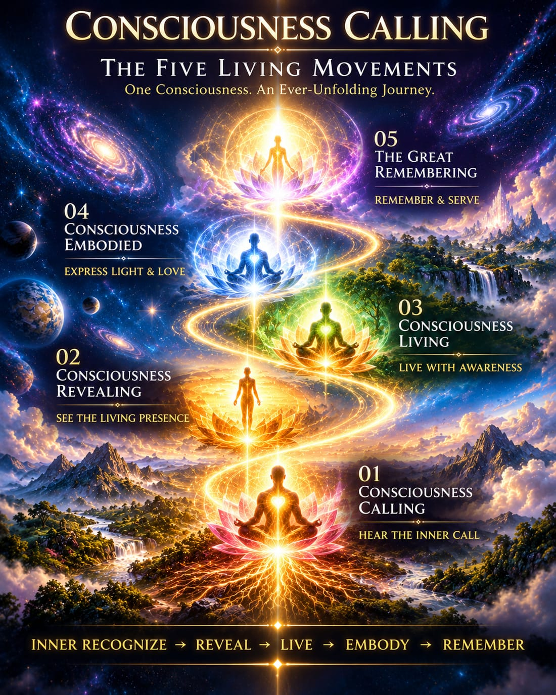

CONSCIOUSNESS CALLINGThe Larger Body of Work
Consciousness Calling is intended as the master identity for a larger body of work. The architecture is deliberately not being forced into a fixed number of books. Five major movements are presently visible.
CONSCIOUSNESS CALLING — The Soul begins to hear.
CONSCIOUSNESS REVEALING — What was hidden becomes recognizable through living symbol and experience.
CONSCIOUSNESS LIVING — Recognition enters ordinary Life.
CONSCIOUSNESS EMBODIED — Consciousness is increasingly lived through the human being.
THE GREAT REMEMBERING — Recognition expands toward embodiment, service and humanity.